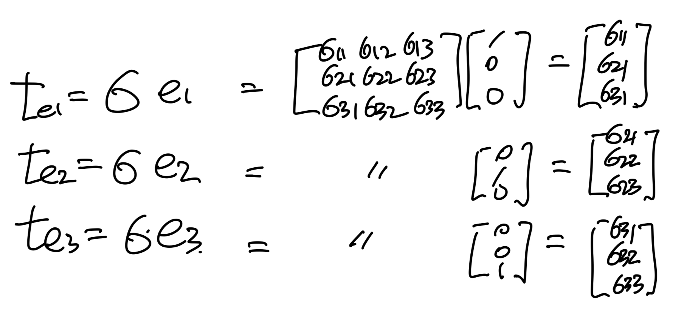
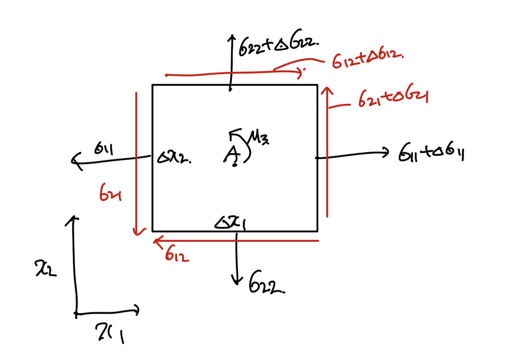
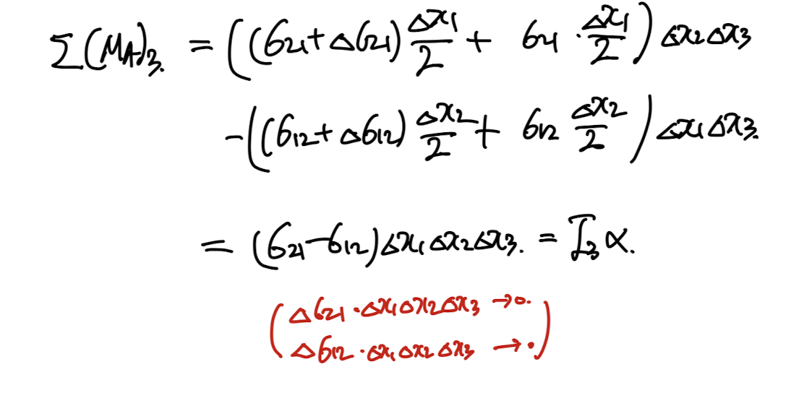
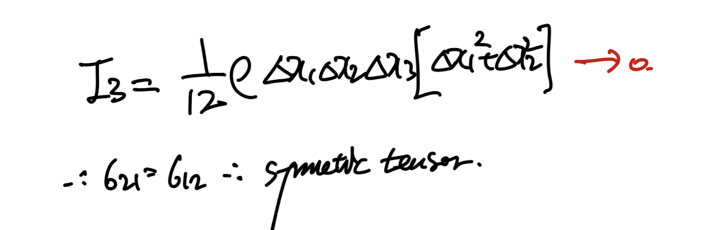
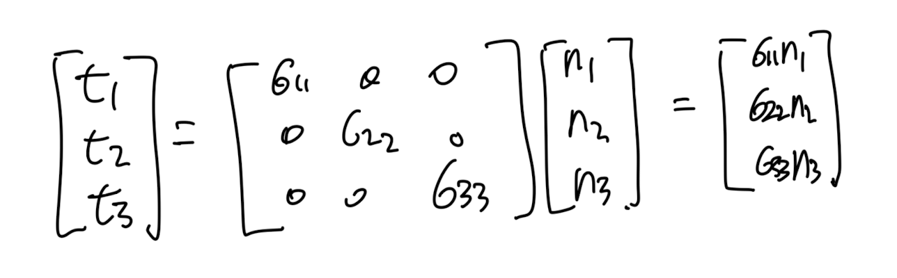
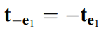
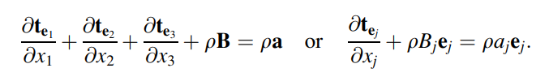
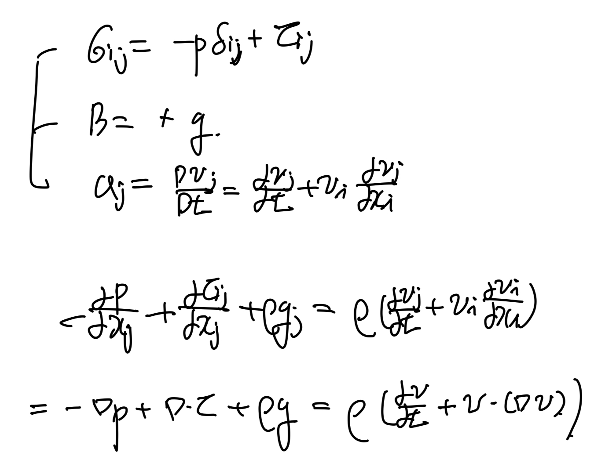

<!DOCTYPE html>
<html lang="ko" data-theme="dark">
<head>
  <meta charset="utf-8">
  <meta name="viewport" content="width=device-width, initial-scale=1">
  <title>ch2 Stress - part2 (σ, Cauchy stress tensor) , Equation of Motion | Sehyeog Kim</title>
  <link rel="stylesheet" href="../../../assets/css/style.css">
  <script>
    (function(){var t=localStorage.getItem('theme')||'dark';document.documentElement.setAttribute('data-theme',t)})();
  </script>
</head>
<body>
  <!-- Theme toggle -->
  <button class="theme-toggle" aria-label="Toggle theme">
    <svg class="icon-sun" viewBox="0 0 24 24" fill="none" stroke="currentColor" stroke-width="2" stroke-linecap="round" stroke-linejoin="round"><circle cx="12" cy="12" r="5"/><line x1="12" y1="1" x2="12" y2="3"/><line x1="12" y1="21" x2="12" y2="23"/><line x1="4.22" y1="4.22" x2="5.64" y2="5.64"/><line x1="18.36" y1="18.36" x2="19.78" y2="19.78"/><line x1="1" y1="12" x2="3" y2="12"/><line x1="21" y1="12" x2="23" y2="12"/><line x1="4.22" y1="19.78" x2="5.64" y2="18.36"/><line x1="18.36" y1="5.64" x2="19.78" y2="4.22"/></svg>
    <svg class="icon-moon" viewBox="0 0 24 24" fill="none" stroke="currentColor" stroke-width="2" stroke-linecap="round" stroke-linejoin="round"><path d="M21 12.79A9 9 0 1 1 11.21 3 7 7 0 0 0 21 12.79z"/></svg>
  </button>

  <!-- Mobile header -->
  <header class="mobile-header">
    <span class="site-title">Sehyeog Kim</span>
    <button class="menu-toggle" aria-label="Menu">&#9776;</button>
  </header>
  <div class="sidebar-overlay"></div>

  <div class="site-wrapper">
    <!-- Sidebar -->
    <aside class="sidebar">
      <div class="sidebar-bg">
        
      </div>
      <div class="sidebar-profile">
        
        <h1 class="profile-name">Sehyeog Kim</h1>
        <p class="profile-bio">AI &amp; Computational Engineering<br>Personal Blog</p>
        <div class="profile-links">
          <a href="https://github.com/Sehyeogkim" target="_blank" rel="noopener">
            <svg viewBox="0 0 16 16" width="16" height="16" fill="currentColor"><path d="M8 0C3.58 0 0 3.58 0 8c0 3.54 2.29 6.53 5.47 7.59.4.07.55-.17.55-.38 0-.19-.01-.82-.01-1.49-2.01.37-2.53-.49-2.69-.94-.09-.23-.48-.94-.82-1.13-.28-.15-.68-.52-.01-.53.63-.01 1.08.58 1.23.82.72 1.21 1.87.87 2.33.66.07-.52.28-.87.51-1.07-1.78-.2-3.64-.89-3.64-3.95 0-.87.31-1.59.82-2.15-.08-.2-.36-1.02.08-2.12 0 0 .67-.21 2.2.82.64-.18 1.32-.27 2-.27.68 0 1.36.09 2 .27 1.53-1.04 2.2-.82 2.2-.82.44 1.1.16 1.92.08 2.12.51.56.82 1.27.82 2.15 0 3.07-1.87 3.75-3.65 3.95.29.25.54.73.54 1.48 0 1.07-.01 1.93-.01 2.2 0 .21.15.46.55.38A8.013 8.013 0 0016 8c0-4.42-3.58-8-8-8z"/></svg> GitHub
          </a>
        </div>
      </div>
      <nav class="sidebar-nav">
        <a href="/" class="nav-item nav-home">Home</a>
        <span class="nav-label">Categories</span>
        <a href="/blog/agentic-ai/" class="nav-item">Agentic_AI<span class="nav-post-count">8</span></a>
        <a href="/blog/blood-flow-and-metabolism/" class="nav-item">Blood-Flow-and-Metabolism<span class="nav-post-count">12</span></a>
        <a href="/blog/cardiovascular-diseases/" class="nav-item">CardioVascular_Diseases<span class="nav-post-count">8</span></a>
        <a href="/blog/computational-linear-algebra/" class="nav-item">Computational-Linear-Algebra<span class="nav-post-count">15</span></a>
        <a href="/blog/computational-fluid-dynamics/" class="nav-item">Computational_Fluid_Dynamics<span class="nav-post-count">14</span></a>
        <a href="/blog/continuum-mechanics/" class="nav-item active">Continuum-Mechanics<span class="nav-post-count">9</span></a>
        <a href="/blog/deep-learning/" class="nav-item">Deep-learning<span class="nav-post-count">14</span></a>
        <a href="/blog/engineering-mathematics/" class="nav-item">Engineering_Mathematics<span class="nav-post-count">14</span></a>
        <a href="/blog/finite-element-method/" class="nav-item">Finite-Element-Method<span class="nav-post-count">1</span></a>
        <a href="/blog/fluid-mechanics/" class="nav-item">Fluid_Mechanics<span class="nav-post-count">18</span></a>
        <a href="/blog/gas-dynamics/" class="nav-item">Gas_Dynamics<span class="nav-post-count">24</span></a>
        <a href="/blog/heat-transfer/" class="nav-item">Heat-transfer<span class="nav-post-count">8</span></a>
        <a href="/blog/machine-learning/" class="nav-item">Machine_Learning<span class="nav-post-count">11</span></a>
        <a href="/blog/sensitivity-analysis/" class="nav-item">Sensitivity_Analysis<span class="nav-post-count">3</span></a>
        <a href="/blog/solid-mechanics/" class="nav-item">Solid_Mechanics<span class="nav-post-count">25</span></a>
        <a href="/blog/thermodynamics/" class="nav-item">Thermodynamics<span class="nav-post-count">14</span></a>
        <a href="/blog/viscous-flow/" class="nav-item">Viscous_Flow<span class="nav-post-count">28</span></a>
      </nav>
    </aside>

    <!-- Main content -->
    <main class="main-content">
      <div class="breadcrumb">  <a href="/">Home</a><span class="sep">/</span>  <a href="/blog/continuum-mechanics/">Continuum-Mechanics</a><span class="sep">/</span>  <span>ch2 Stress - part2 (σ, Cauchy stress tensor) , Equation of Motion</span></div>
<a href="/blog/continuum-mechanics/" class="back-link">&larr; Back to Continuum-Mechanics</a>
<div class="page-header"><h1>ch2 Stress - part2 (σ, Cauchy stress tensor) , Equation of Motion</h1></div>
<div class="post-meta"><span class="meta-item"><span class="meta-label">Date:</span> 2025-02-02</span><span class="meta-item"><span class="meta-label">Category:</span> Continuum-Mechanics</span><span class="meta-item"><span class="meta-label">Source:</span> <a href="https://jeffdissel.tistory.com/m/162" target="_blank" rel="noopener">link</a></span></div>
<article class="post-content"><p>ch2 Stress - part2 (σ, Cauchy stress tensor) , Equation of Motion<br />
이번 시간에는<br />
Cauchy stress tensor에 대해서 자세하게<br />
분석해보자.<br />
가장 간결하게 보여주는 그림은 다음과 같다.<br />
<br />
저는 이렇게 이해했습니다.<br />
traction vector(t)라는 것이, 각 면마다 작용하는데,<br />
벡터이므로<br />
, 각 면에서도 3가지 성분으로 쪼갤 수 있다.<br />
여기서 면과 수직인 성분 - normal stress<br />
면과 평행한 성분 - shear stress<br />
임을 고체역학 시간에 다루었을 것이다.<br />
<br />
위를 보면 3가지 면의 total traction각각도 vector임을 알 수 있다.<br />
여기서 stress tensor가 symmetric임을 증명해보자.<br />
<br />
점 A를 기준으로 Moment를 계산해보자.<br />
<br />
high order term -&gt; 0 faster than the others.<br />
관성모멘트도 High order term이므로, symmetrc함을 알 수 있다.<br />
<br />
1,2방향외에 2,3/ 1,3 방향으로 분석시 똑같은 결과가 나옴을 알 수 있다.<br />
아주 중요.<br />
Cauchy stress tensor - symmetric Matrix.<br />
symmetric인게 왜 중요한가???<br />
Part3에서도 다루었지만,<br />
symmetric인 경우, 고유벡터3개를<br />
기저벡터(서로 수직)으로 만들 수 있다.<br />
<br />
<br />
즉 좌표공간(새로운 기저벡터)로 변환시키면,<br />
<br />
에서<br />
<br />
Q: 고유벡터로 이루어진 행렬,(대각화과정)<br />
로 변환시킬 수 있다.<br />
변환후의 stress값이 최대,최소값이고,<br />
principal stress라고 칭한다.<br />
즉, 우리는 물체에 작용하는 최대 최소 응력을 계산할 수 있게 된다.<br />
<br />
여기서 sigma 11,22,33은<br />
위 행렬의 eigen value값이기 때문에,<br />
3*3행렬의 eigen value를 구해보면, 다음과 같다.<br />
</p>
<hr />
<h1>Equations of motion</h1>
<p>위에서 정의한 코시 stress tensor를 가지고,<br />
힘의 평형 방정식을 작성해보자.<br />
<br />
t: traction vector<br />
힘의 평형식을 세워주면,<br />
Surface force + body force = m * a<br />
<br />
그리고 여기서, 우리는<br />
<br />
을 이용하여 좌항의 3성분들을 다음과 같이 변환할 수 있다.<br />
<br />
변환시킨 식을 대입후,<br />
Δx1 Δx2 Δx3<br />
를 좌항 우항 약분시켜주면 다음식이 유도된다.<br />
<br />
이후,<br />
Δx -&gt; 0 으로 수렴시키면 편미분 식으로 변환된다.<br />
<br />
여기서 우리가 이전 포스터에서와 위에서 정의한<br />
Cauchy stress tensor로 traction vector를 정의한 후,<br />
식에 대입해주자.<br />
<br />
최종적으로,<br />
Cauchy's Equation of motion<br />
이 도출된다.<br />
위 식에서, Cauchy stress tensor = 압력, 점성력 항으로 구성되면,<br />
유체역학의 Navier's Stokes Equations이 유도됨을 알 수 있다.<br />
<br />
Navier's Stokes Equation.</p></article>
      <footer class="site-footer">
        <p>&copy; 2026 Sehyeog Kim. Built with gitfolio-inspired theme.</p>
      </footer>
    </main>
  </div>

  <script src="../../../assets/js/main.js"></script>
</body>
</html>